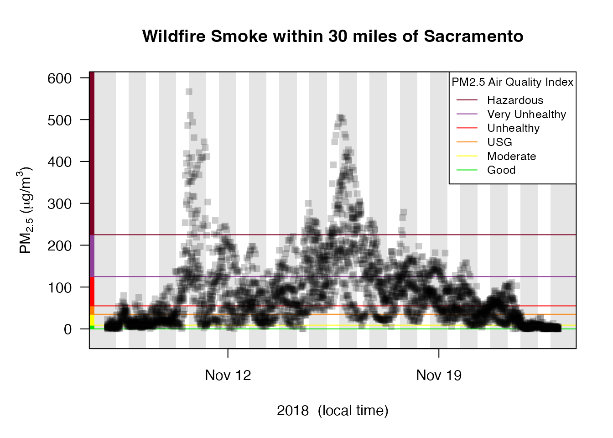

Introduction to AirMonitor
Mazama Science
2022-10-31
Source:vignettes/AirMonitor.Rmd
AirMonitor.RmdInstallation
Install from CRAN with:
install.packages('AirMonitor')
Install the latest version from GitHub with:
devtools::install_github('mazamascience/AirMonitor')
Available data
The USFS AirFire group regularly processes monitoring data in support of their various operational tools. Pre-processed, harmonized and QC’ed data files can be loaded with the following functions:
-
~_load()– load data based on a start- and end-time -
~loadAnnual()– load a year’s worth of data -
~loadDaily()– load the most recent 45 days of data (updated once per day) -
~loadLatest()– load the most recent 10 days of data (updated every hour)
Data archives go back to 2014 or earlier depending on the data source.
Recipes
We encourage people to embrace “recipe” style coding as enabled by
dplyr and related packages. The special
%>% operator uses the output of one function as the
first argument of the next function, thus allowing for easy “chaining”
of results to create a step-by-step recipe.
With only a few exceptions, all the monitor_ functions
accept a mts_monitor object as their first argument and
generate a mts_monitor object as a result so they can be
chained together.
A first example
Let’s say we are interested in the impact of smoke from the 2018 Camp Fire in the Sacramento area.
We would begin by creating a Camp_Fire object that has
all the monitors in California for the period of interest. The recipe
for creating Camp_Fire has four steps: 1) load annual data;
2) filter for monitors in California; 3) restrict the date range to Camp
Fire dates; 4) remove any monitors with no valid data in this range.
# create the Camp_Fire 'mts_monitor' object
Camp_Fire <-
# 1) load annual data
monitor_loadAnnual(2018) %>%
# 2) filter for California
monitor_filter(stateCode == 'CA') %>%
# 3) restrict date range
monitor_filterDate(
startdate = 20181108,
enddate = 20181123,
timezone = "America/Los_Angeles"
) %>%
# 4) remove monitors with no valid data
monitor_dropEmpty()We can use the monitor_leaflet() function to display
these monitors (colored by maximum PM2.5 value) in an interactive map.
This map allows us to zoom in and click on the monitor in downtown
Sacramento to get it’s deviceDeploymentID –
“127e996697f9731c_840060670010”.
monitor_leaflet(Camp_Fire)We can use this deviceDeploymentID to create a
mts_monitor object for this single monitor and take a look at a
time series plot. Day-night shading and AQI decorations create a
publication-ready plot:
# create single-monitor Sacramento
Sacramento <-
# 1) start with Camp_Fire
Camp_Fire %>%
# 2) select a specific device-deployment
monitor_select("127e996697f9731c_840060670010")
# review timeseries plot
Sacramento %>%
monitor_timeseriesPlot(
shadedNight = TRUE,
addAQI = TRUE,
main = "Hourly PM2.5 Concentration in Sacramento"
)
# add the AQI legend
addAQILegend(cex = 0.8)
Next, we can use this specific location to create a mts_monitor object containing all monitors within 50 kilometers (31 miles) of Sacramento.
Sacramento_area <-
# 1) start with Camp_Fire
Camp_Fire %>%
# 2) find all monitors within 50km of Sacramento
monitor_filterByDistance(
longitude = Sacramento$meta$longitude,
latitude = Sacramento$meta$latitude,
radius = 50000
)
monitor_leaflet(Sacramento_area)We can use the same monitor_timeseriesPlot() function to
display the hourly data for all the monitors in the Sacramento
area in a single plot. This gives a sense of the range of values within
the area at any given hour.
Sacramento_area %>%
monitor_timeseriesPlot(
shadedNight = TRUE,
addAQI = TRUE,
main = "Wildfire Smoke within 30 miles of Sacramento"
)
addAQILegend(lwd = 1, pch = NA, bg = "white", cex = 0.8)
Now we can average together all the monitors and create a local-time, daily average for the Sacramento area.
# 1) start with Sacramento_area
Sacramento_area %>%
# 2) average together all timeseries hour-by-hour
monitor_collapse(
deviceID = "Sacramento_area"
) %>%
# 3) calculate the local-time daily average (default)
monitor_dailyStatistic() %>%
# 4) pull out the $data dataframe
monitor_getData()## # A tibble: 15 × 2
## datetime `9qce5hqsq9_Sacramento_area`
## <dttm> <dbl>
## 1 2018-11-08 00:00:00 16.6
## 2 2018-11-09 00:00:00 23.5
## 3 2018-11-10 00:00:00 117.
## 4 2018-11-11 00:00:00 106.
## 5 2018-11-12 00:00:00 78.1
## 6 2018-11-13 00:00:00 68.6
## 7 2018-11-14 00:00:00 107.
## 8 2018-11-15 00:00:00 192.
## 9 2018-11-16 00:00:00 160.
## 10 2018-11-17 00:00:00 98.0
## 11 2018-11-18 00:00:00 94.7
## 12 2018-11-19 00:00:00 68.2
## 13 2018-11-20 00:00:00 44.5
## 14 2018-11-21 00:00:00 32.9
## 15 2018-11-22 00:00:00 5.01Alternatively, we can plot the daily averages.
# 1) start with Sacramento_area
Sacramento_area %>%
# 2) average together all timeseries hour-by-hour
monitor_collapse() %>%
# 3) create daily barplot
monitor_dailyBarplot(
main = "Daily Average PM2.5 in the Sacramento Area"
)
# add the AQI legend
addAQILegend(pch = 15, bg = "white", cex = 0.8)
Best of luck analyzing your local air quality data!